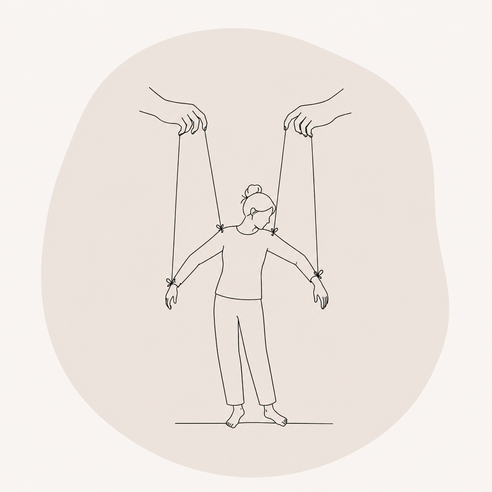

WHO I WORK WITH / 07
PEOPLE PLEASING

Putting others first isn't always a choice; it can become an automatic survival strategy shaped by past experiences. Over time, constantly prioritising others may leave you feeling disconnected from your own needs.
You might notice:
- Difficulty saying no
- Fear of disappointing others
- Feeling responsible for other people's emotions
- Avoiding conflict
- Overcommitting yourself
- Losing sight of what you need
Our work focuses on increasing awareness of these patterns while gradually building the confidence to recognise, communicate and honour your own boundaries.
BOOK A SESSION →